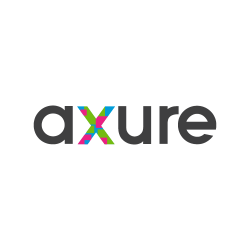
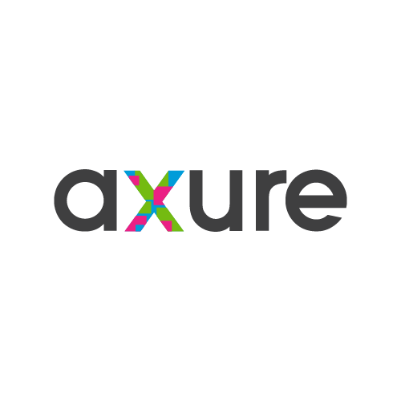

Reservation Website

For my first project at Prime Digital Academy, I designed a website for finding a restaurant and booking a meal reservation.
This is a portfolio-in-progress, that I am coding myself. I am currently attending the UX Developer program at Prime Digital Academy.
Please scroll down for details about these projects.
For my first project at Prime Digital Academy, I designed a website for finding a restaurant and booking a meal reservation.

For my second project at Prime Digital Academy, I designed was to design a physical object, in this case a water bottle.

My third project at Prime Digital Academy was a team effort to test the usability of an event calendar web app.
The fourth project to create a design strategy for MakeIT.MSP. to assist in their efforts to attract tech talent to the Twin Cities.
Greg has developed proficiency and comfort with the following tools.


 

Currently entertaining new opportunities. Please get in touch via email:
For my first project at Prime, I designed a website for finding a restaurant and booking a meal reservation.
I first defined my audience as: Young entrepreneurs who want to find a restaurant and book a meal reservation. I chose three people within that audience and had them complete a restaurant booking at the OpenTable website.

Based on the feedback, I received from my user group, I sketched out my proposed layout.


Next I used Adobe Illustrator to create wireframes from those sketches.


I made a site map that illustrated how the navigation for my proposed website would work.

Next I refined the wireframes, using Adobe Illustrator to reflect where I wanted navigation on the main pages.


I imported the wireframes into Axure and created a clickable prototype. I ran a usability evaluation using this prototype with my three users from the beginning of the project.
Link to Axure prototypeThe project was to produce a physical prototype of a waterbottle to be used by coding students at Prime Digital Academy. Tasks performed included: heuristic analysis on an existing waterbottle, sketched concepts and created a physical prototype. Usability interviews were conducted using this physical prototype.

After gaining a clearer understanding of the intended user, the activities and context that they would be using the waterbottle. I evaluated an existing waterbottle.

These findings were then sorted according to Nielsen's heuristics and made into a report.

Next I defined three design concepts for the water bottle redesign.

Each design concept included: visuals, a written statement and...

...3 hand-sketches showcasing the new form and function of the related water bottle.

Based on researching several methods such as contextual inquiry and think-aloud protocol, I developed a plan for conducting a usabiity interview with current Prime Digital Academy students. I wrote a script for this interview.

I chose one design concept and create a physical prototype. This was constructed at Leonardo's Basement in Minneapolis, using found materials.

After conducting interviews with Prime students, I presented my findings, accompanied by slides I created to illustrate.
The project was to perform both in person and remote usability tests for an existing web app. The app was an event calendar for employees of CH Robinson. The app had been developed by a coding cohort at Prime Digital Academy.


Below are slides from our presentation proposing our design strategy to attract tech talent to the Twin Cities. Research was both independent and also relied on material supplied by MakeIT.MSP.


Our Approach: We want to bring into focus the positive aspects of the region, especially the diversity of people and ideas, that people are simply not aware of.

How does it work? The system of prototypes fosters the idea that MSP is a place to connect and a place to make progress in ideas and work that matter.